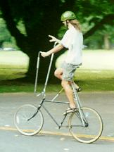

(tallbike technical information.)

Ah, the flagships of the fleet. The Organ Donor (first three pictures) was the first tallbike to come out of our yard, and many of her mistakes were corrected when we crafted her brother, Tallboy (final picture). Those handlebars, however, have got to go. Notice that they are only anchored at the stem. This gives them about half a meter of flex in any direction that they care to flex in, a feature often disconcerting to the pilot.
|
The Organ Donor and Tallboy are part of our salute to one of the earliest ancestors of Chunk 666, the Eiffel Tower Bicycle. "One of the most curious sights recently seen is called the Eiffel Tower Bicycle. This machine is constructed on the same principle as an ordinary one, but has a frame which carries the rider at a distance of some ten feet from terra firma. The adventurous spirit who rides this remarkable wheel is usually accompanied by a number of companions who prevent vehicles and pedestrians from obstructing the way."Scientific American, December, 1894. |
| Copyright 2003 Megulon Five <megulon5@dclxvi.org>. |
|
This work is licensed under a Creative Commons License. | Last modified 12 September 1997. |